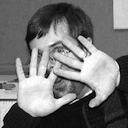

Our Team
We're a full-service software development consultancy, focused on delivering consistent results using today's best technologies.
Each of us has honed our craft through practical application. We've grown with the industry. We have a history of multiple languages and environments. We've lived agile projects. We've been on and led agile teams. We've introduced agile to big organizations. We know what works. We know how to make software projects successful.
More than just doing, we're leading the way. You'll see us presenting in local users' groups. You'll see us presenting at national conferences. You can read our writings and see how we're thinking and shaping our industry around us.
Most importantly, Gaslight was founded on the principles of trust, honesty, transparency, and most importantly, doing the right thing no matter what.
-
- 
- Chris Nelson
- Developer
- chris@gaslightsoftware.com
- Blog
Chris has 10+ years experience developing software for startups to Fortune 500 companies. He was a longtime java developer who came the long way around to Ruby on Rails. He is active in the JRuby project and getting the word out about (J)Ruby on Rails wherever, whenever and however he can.
Chris is now working full time in Ruby and having a great time doing it. You’ll also find him presenting at various Rails related events around the country.
-
- Doug Alcorn
- Developer
- dalcorn@gaslightsoftware.com
- Blog
Doug has been a professional software developer for more than 15 years, with five of those years doing web development with Rails. He has both participated in and led teams using SCRUM, XP, and several variations in between.
Doug believes in and practices a well developed discipline of test first development, and has extensive experience working with startup ventures and Fortune 500 companies.
-
- Chris Moore
- Developer
- chrism@gaslightsoftware.com
- Blog
Chris has been developing web applications for over ten years. Although he made mistakes with PHP often, he discovered Rails in 2005 and hasn't looked back.
He came from a background in warehouse management systems and large data sets, which makes developing web applications a natural fit.
You can usually find him attached to something with a processor, but when he isn't, he's probably playing in the park with his wife and toddler.
-
- Bill Barnett
- Developer
- bill@gaslightsoftware.com
- Blog
-
After a brief military career and a less brief career primarily as a commercial aircraft mechanic Bill earned a degree in computer science from the University of Cincinnati. Since then he has focused on server–side Web application development, first in PHP then exclusively in Ruby for Cincinnati Children’s Hospital, SCRIP–SAFE, and dozens of clients, first as an independent and now as a member of the Gaslight team.
A firm believer in community, Bill founded Cincinnati’s PHP users group and Lean Startup Circle, and is active in Cincinnati’s Agile Round Table and Ruby Brigade. Aside from Gaslight Software, Bill’s a co-founder at BudgetSketch and Cincinnati Coworks. When not honing his business and software development skills, Bill enjoys travel and coaching his daughter’s hockey team.
-
- James Smith
- Developer
- james@gaslightsoftware.com
- Blog
James is a passionate software craftsman, known for his disciplined practices of testing and delivering the best quality software possible. James began developing software using Ruby in 2007, and has never looked back.
He enjoys the creative, collaborative environment at Gaslight and plays an integral part in producing quality solutions for our clients.
James enjoys gaming of all sorts, the outdoors, music, art, but mostly spending time with his family.
-
- Peter Kananen
- Developer
- peter@gaslightsoftware.com
- Blog
Peter has been solving business problems through agile software approaches for over six years. Much of this time has been spent writing enterprise Java, but he now has the pleasure of primarily writing Ruby, JavaScript, and Objective-C. His interests also extend into entrepreneurship, business development, and how modern web technologies can transform existing markets.
Peter loves working with a team of smart people who challenge him to improve his practices. The people at Gaslight provide this opportunity for him daily, which he's really thrilled about. He's passionate about building Gaslight's craftsmanship practices, as well increasing its contribution to open source and education in the tech community.
If he's not writing code, Peter is spending time with his family, and if he's really lucky, home-brewing and climbing cliffs in Kentucky.
-
- Joel Turnbull
- Developer
- joel@gaslightsoftware.com
- Blog
-
Joel Turnbull likes to build things. He's open-minded, and enjoys a challenge. He keeps his tools sharp, and assembles well-oiled machines.
Professionally, Joel's software development experience has been in marketing and e-commerce. His languages of choice, are Ruby, Javascript, Smalltalk, and Perl. His strengths are in object oriented design and and Test Driven Development.
Joel is a member and an occasional presenter at the Cincinnati Agile Round Table and Cincinnati Javascript User Group. He supports and contributes to multiple open-source software projects. He studied computer science, business, and graphic design at Indiana University in Bloomington, Indiana.
Personally, he likes cooking, playing sports, and performing music in driveways, nursing homes, and bowling alleys. He is constantly thankful for his beautiful wife, and three good kids.
-
- Dewayne Greenwood
- Managing Partner
- dewayne@gaslightsoftware.com
- Blog
Dewayne has 10+ years combined entrepreneurial, business development, and finance experience. He made the shift toward web application development in 2007, to which he has been working within agile development teams ever since.
Dewayne is also respected for his years of entrepreneurial experience, including the launch and direction of business and marketing activities for projects like BudgetSketch... a Ruby on Rails web application that now has users in over 100 countries.
These days, he’s known around Gaslight for his design and user experience knowledge, and performing the role of Managing Partner.